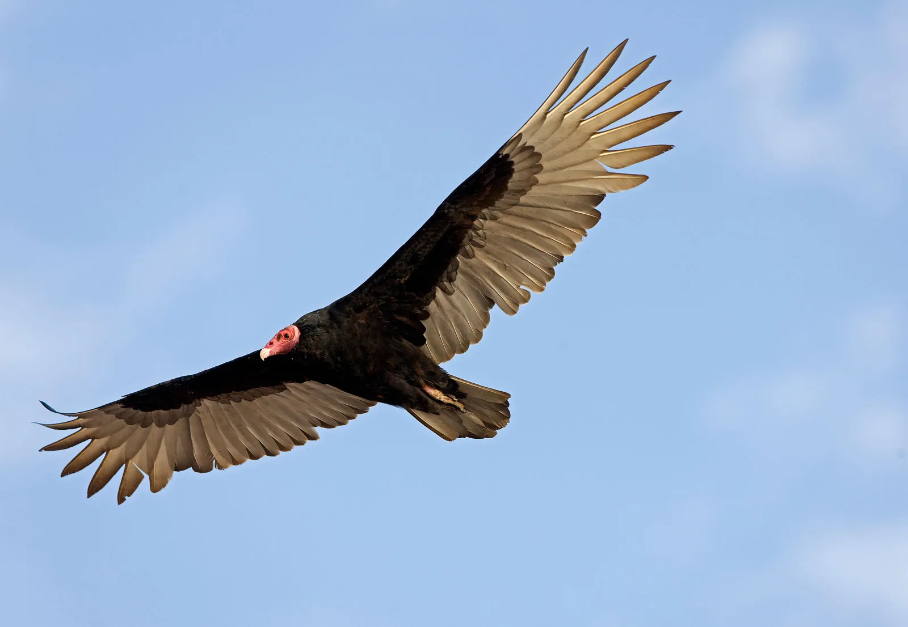

I enjoy learning music - I sing in a choir twice a week. This has taught me so much about the world of music. it has also allowed me to have amazing international experiences when we go on tour.
I work at a California wildlife museum. I work with the animals there, including lizards, salimanders, and turtles. I also am able to teach the visitors about different types of conservation.